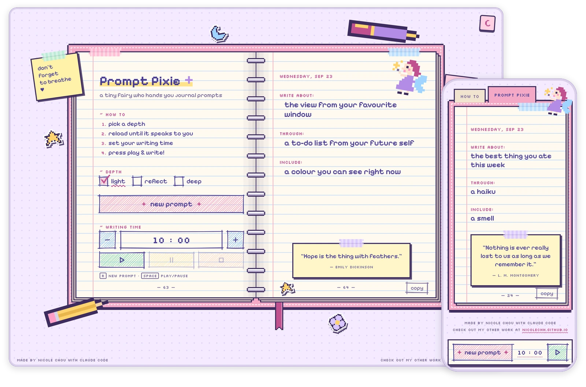
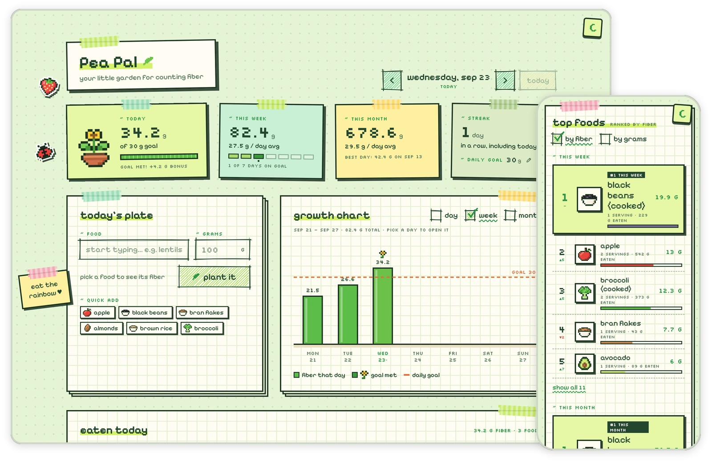
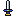

Raspberry AI: Masking on a Canvas
Multi-material masking, a mode that leaves the rest of the workspace usable.
Product designer
I think in systems and design for people.
Multi-material masking, a mode that leaves the rest of the workspace usable.

Created a design system used to redesign and build new features on.

A guided tutorial system built around workflows to reduce onboarding calls.

Randomized journal prompts with a built-in timer.

Log meals, track daily fiber, and see your top foods.
I’m a product designer who can't help but ask “what if?” I design systems where one good pattern quietly does the work of ten screens, and every decision comes with a plan B. Sometimes a plan C, if I've had coffee.
Currently obsessed with: tennis, journaling, and 
If you see something you like, feel free to say hello at nicole.chou97@outlook.com or on LinkedIn!